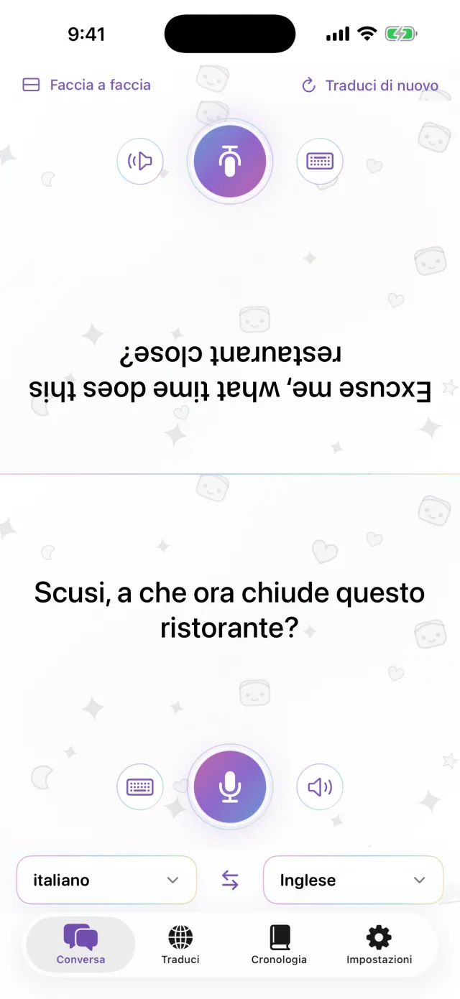
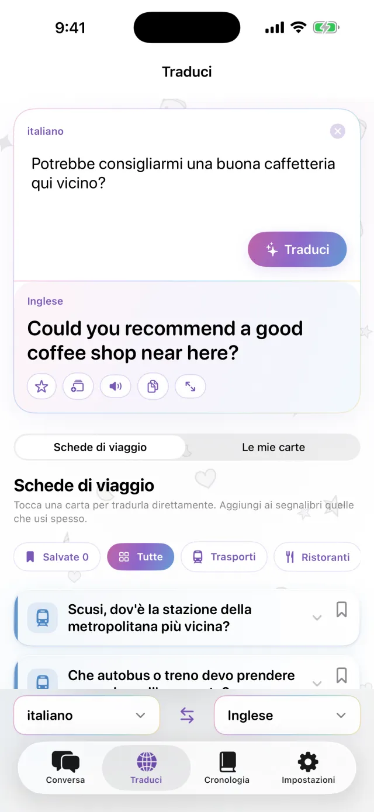
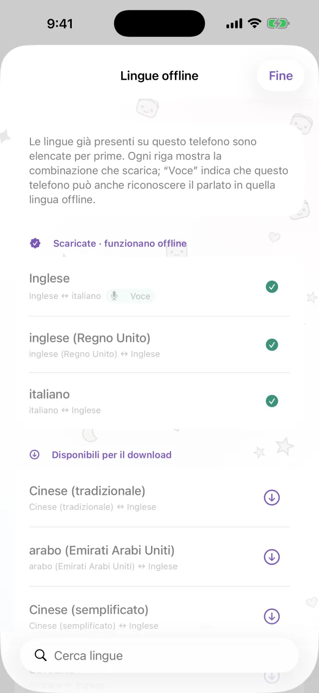
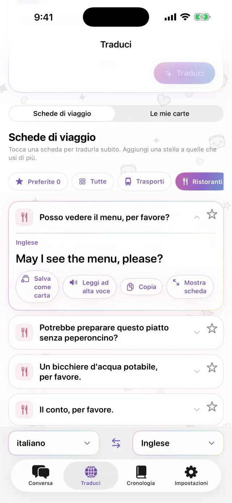
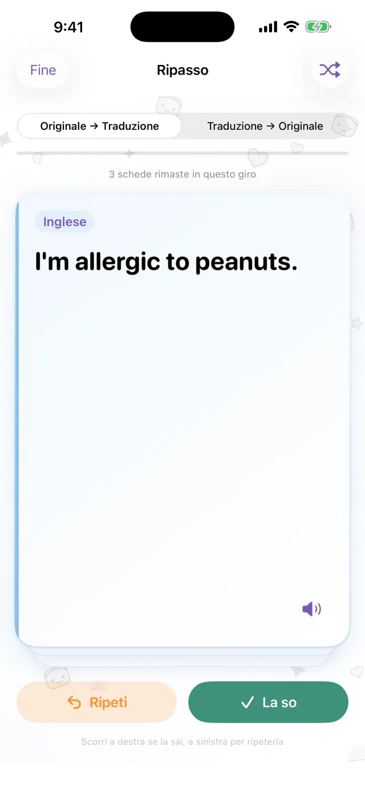

Traduttore per iPhone
Traduttore per iPhone
Metti l’iPhone
tra voi due.
Tocca il microfono e parla. La traduzione compare sull’altra metà dello schermo, rivolta verso l’altra persona. Quando risponde, funziona allo stesso modo. Scarica prima le lingue e usi l’app anche senza connessione.
Presto su App Store- Circa 20 lingue
- Offline dopo il download
- Nessuna registrazione

Scrittura
Non puoi parlare ad alta voce? Scrivi.
In un posto silenzioso, o se l’altra persona parla troppo veloce, scrivi il testo. Puoi ingrandire la traduzione a tutto schermo e mostrarla.
- Copiala o falla leggere ad alta voce
- Scambia le due lingue con un tocco

Offline
Traduce anche senza connessione
Traduzione, riconoscimento vocale e lettura ad alta voce funzionano sul tuo iPhone. Scarica le lingue che ti servono prima del viaggio e le usi in aereo o prima di comprare una SIM. Quello che dici non viene inviato a un server e le registrazioni non vengono conservate.

Carte con le frasi
Salva le frasi che ripeti ogni volta
L’indirizzo dell’hotel, un’allergia alimentare, la stazione che cerchi. Salvali come carte e non dovrai riscriverli. Tocca una carta e viene tradotta nella lingua dell’altra persona. Trovi già pronte le carte per trasporti, ristoranti, alloggi e acquisti.

Pro
Ripassa le frasi salvate quando è il momento
Tocca la stella su una frase per salvarla e ripassarla. Se la ricordi, ritorna dopo 1, 3, 7, 14 e poi 30 giorni. Se non la ricordi, la rivedi lo stesso giorno. Puoi partire dall’originale e arrivare alla traduzione, o fare il contrario. Questa parte è inclusa in Pro.

Utile per
- Ordinare in una piccola trattoria
- Dire l’indirizzo al tassista
- Spiegare un’allergia in farmacia
- Lasciare le valigie alla reception dell’hotel
- Chiedere indicazioni
Guardalo in 30 secondi
In questo video la modalità aereo è attiva.
In breve
| Lingue | Circa 20 (le lingue che Apple traduce sul dispositivo) |
|---|---|
| Offline | Sì, dopo aver scaricato le lingue |
| Input vocale | Sì. Alcune lingue sono solo scritte |
| Account | Non serve |
| Prezzo | Gratis. Pro è a parte (vedi sotto) |
| Requisiti | iPhone con iOS 18 o versioni successive |
- La prima volta serve una connessione per scaricare le lingue.
- I prezzi sono mostrati nella tua valuta locale sull’App Store.
Gratis e Pro
Gratis
- Conversazione faccia a faccia
- Scrittura e visualizzazione a tutto schermo
- Traduzione offline
- Schede di viaggio e 3 carte personali
- Piccolo banner pubblicitario
Pro
- Senza pubblicità
- Tutte le carte che vuoi
- Cronologia delle traduzioni e ripasso a intervalli
Settimanale, mensile o acquisto unico.
Prima di partire, scarica le lingue.
Presto su App StoreiPhone · iOS 18 o versioni successive · Download gratuito · Come funziona ogni schermata